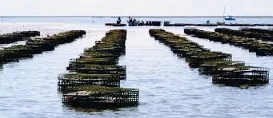
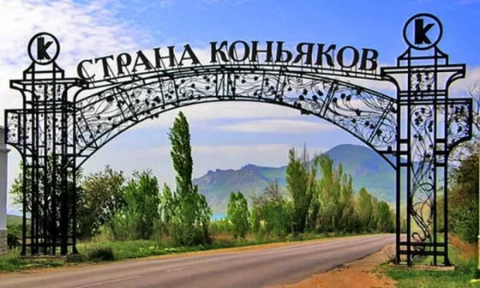

Уличная еда: чебуреки, янтыки и пирожки
Если в Крыму есть уличная гастрономическая столица — это чебуречная. Настоящий крымский чебурек — большой, тонкий, с сочной говядино-бараньей начинкой и обязательным жидким бульоном внутри. Янтык — то же самое, но не во фритюре, а на сухой сковороде.
- Чебурек с мясом — классика, цена в 2026 году в среднем 250–350 ₽ за штуку.
- Янтык с сыром и зеленью — лёгкая версия для завтрака.
- Пирожки с мидиями и рыбой — пляжная классика, ищите у рыбных кафе на набережной.

Морская кухня: рыба, мидии, устрицы
В Чёрном море ловится около 30 промысловых видов рыбы, и в 2026 году в Феодосии всё чаще можно поесть «рыбу с воды» — то есть пойманную тем же утром.
- Барабулька (султанка) — мелкая рыбка, жарится во фритюре, едят целиком. Сезон — июль–октябрь.
- Ставрида и луфарь — на гриле, лучшие в августе и сентябре.
- Камбала-калкан — крупная рыба для запекания, дорогая.
- Мидии — крымские мидии-фермы Кацивели и Карадагской бухты. Едят с белым вином.
- Устрицы — Тарханкут и Донузлав, цена в 2026 — от 200 ₽ за штуку.
Лайфхак: спрашивайте у официанта, какая рыба «сегодняшняя». Если не отвечают — заказывайте мясо.
Крымско-татарская кухня
Самая глубокая кулинарная традиция полуострова. Не уезжайте, не попробовав:
- Лагман: густой суп с домашней лапшой, бараниной и овощами.
- Шурпа: наваристый суп на баранине.
- Пилав: крымский плов, отличается от узбекского — он суше и менее жирный.
- Сарма: голубцы в виноградных листьях.
- Кубете: закрытый пирог с мясом и картошкой — отлично для пикника.
- Шашлык на «казан-мангале»: особая местная техника готовки.

Крымское вино: что обязательно попробовать в 2026 году
В 2026 году крымское виноделие — это уже не «массмаркет с пляжа», а серьёзная индустрия с защищёнными терруарами и винодельнями мирового уровня.
- Игристые «Нового Света» — классические купажи, сделанные методом шампанизации в бутылке.
- Бренди и марочные вина «Коктебеля» — старейшая винодельня посёлка.
- «Солнечная Долина» (Sun Valley) — десертные вина «Чёрный Доктор» и «Чёрный Полковник».
- Массандра — легендарные мускаты и портвейны южного берега.
- «Альма Велли», «Усадьба Перовских», Esse — современные виноделы новой волны.
Подробнее про винные туры в окрестностях Феодосии читайте в статье «Коктебель и Кара-Даг 2026».
Крымский сыр и фермерские продукты
Сырное направление — самое стремительно растущее в крымской гастрономии. В 2026 году в Крыму работает более 30 крафтовых сыроварен.
- Каймак — традиционный молочный продукт между сметаной и мягким сыром.
- Брынза, сулугуни и адыгейский — везде, особенно в Бахчисарае.
- Полутвёрдые сыры новой волны: с пажитником, перцем, виноградным жмыхом.
- Фермерские рынки в Феодосии — на улице Земской (вторник, четверг, суббота с утра).
Десерты и сладости
- Пахлава — крымско-татарская версия с грецким орехом и розовой водой.
- Курабье и шакер-чурек — рассыпчатое песочное печенье.
- Варенье из инжира, кизила и грецкого ореха — отличный сувенир из Крыма.
- Крымское мороженое с инжиром, миндалём и розой — попробуйте на набережной Феодосии.
Где попробовать всё это в Феодосии
Точные адреса меняются, но есть проверенные ориентиры:
- Чебуречные на Земской и Галерейной — для уличной еды.
- Кафе на проспекте Айвазовского — для рыбы и крымско-татарской кухни в более спокойной обстановке.
- Винные бары в районе Советской — для дегустации малых виноделов.
- Фермерский рынок на Земской — для каймака, сыра, варенья и инжира.
Совет от команды «Палермо»: при заезде попросите «карту вкусов» — мы лично пробовали всё и подскажем, какое заведение сейчас на пике, а где поменялся повар и стало хуже.
Советы и лайфхаки
- Уличная еда у моря всегда дороже на 30–40%, чем в районе на 2–3 квартала вглубь — выгоднее обедать «в стороне».
- Покупайте вино только в фирменных магазинах и на самих винодельнях — на трассе и пляже подделок много.
- В жару избегайте свежих салатов и сырого молока на ярмарках — без вариантов.
- В чебуречной всегда смотрите на оборот: если очередь — берите без сомнений.
- Везите домой сыр, варенье, вино и молотый кофе с цикорием — это четыре главных гастрономических сувенира 2026 года.
Частые вопросы
Что точно нужно попробовать в Феодосии?
Чебурек или янтык — обязательно. Барабульку или ставриду на гриле — обязательно. Бокал крымского игристого «Нового Света» или вина «Коктебеля» — обязательно. Каймак или местный сыр на завтрак — желательно.
Сколько закладывать на еду в день в 2026 году?
В среднем 2000–3000 ₽ на человека: завтрак 400–600 ₽, обед 700–1000 ₽, ужин 900–1500 ₽. Винные дегустации — отдельной строкой.
Можно ли в Крыму есть рыбу из моря, не боясь?
Да, если это рыба от лицензированных рыбаков и в проверенных кафе. На пляжных лотках без сертификатов лучше не рисковать.
Какой крымский сувенир-еда самый «безопасный» для дома?
Вино, варенье и сыр в вакуумной упаковке. С каймаком, фермерскими сливочными сырами и копчёной рыбой нужно везти с собой холодильник-сумку.
Хотите остановиться в Феодосии?
В гостевом доме «Палермо» на Советской, 38 — тихий двор, домашние завтрака и охраняемая парковка.